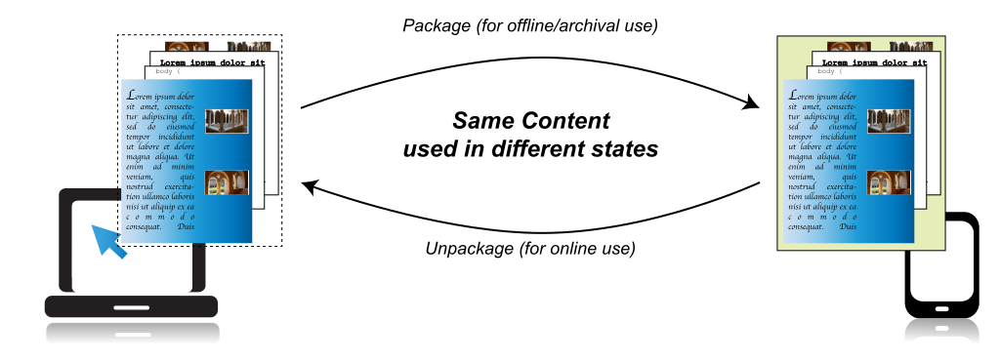
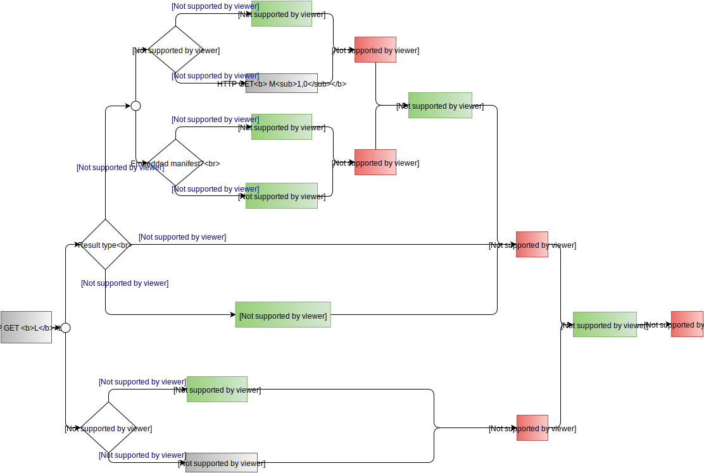

“A book is a discrete collection of text (and other media), that is designed by an author(s) as an internally complete representation of an idea, or set of ideas; emotion or set of emotions; and transmitted to readers in various formats.”
“Books can learn from the Web how to be bounded, but open.
The Web can learn from books how to be open, but bounded.”
This document introduces Portable Web Publications, a vision for the future of digital publishing that is based on a fully native representation of documents within the Open Web Platform. Portable Web Publications achieve full convergence between online and offline/portable document publishing: publishers and users won't need to choose one or the other, but can switch between them dynamically, at will. Authors can concentrate on the way they intend to transmit their ideas and emotions, without having to deal with the specificities of a particular format.
This document outlines a general vision and should not be considered a technical specification. Instead, its goal is to outline that vision and possible technical directions to achieve it, and reflects the discussions that occured in the Digital Publishing Interest Group. In partiucular, this document looks at some of the technical implications, and possible solutions, arising from the use cases and requirements collected by the Digital Publishing Interest Group, and documented in a separate UCR document [[pwp-ucr]]. As such, some of the sections are more detailed and more mature than others. A more detailed and rigoruous specification should be done by a separated, dedicated Working Group in the future.
The vision of publishing on the Web
The high level vision
The Web emerged in 1994, based on a model of individual pages loosely joined by hyperlinks. Clustering within domains, with explicit navigation elements built into them, webpages evolved into websites. This model however inherited very little from an existing, powerful and much older page-based media: books.
Over centuries, “books” have assumed many forms: journals, magazines, pamphlets of longform articles and essays, newspapers, atlases, comics, notebooks, albums of all sorts. We can define these different manifestations as “publications”: bound editions of meaningful media, made public.
We believe there is great value in combining this older tradition—of portable, bounded publications—with the pervasive accessibility, addressability, and interconnectedness of the Open Web Platform. New models of economic sustainability, innovative experiences of knowledge and invigorated socio-cultural engagement depend on this.
It is the task of this W3C Digital Publishing Interest Group to explore the uniqueness, desirability, and feasibility of bringing these two great models of publishing together. This document explores the technical feasibility and some of the challenges arising from real use cases that arise when exploring this vision further. Many of these challenges arise from the various use cases, documented in the separate note on PWP Use Cases and Requirement [[pwp-ucr]]
The technical vision
From a technical viewpoint, our vision for Portable Web Publications is to define a class of documents on the Web that would be part of the Digital Publishing ecosystem but would also be fully native citizens of the Open Web Platform. In this vision, the current format- and workflow-level separation between offline/portable and online (Web) document publishing is diminished to zero. These are merely two dynamic manifestations of the same publication: content authored with online use as the primary mode can easily be saved by the user for offline reading in portable document form. Content authored primarily for use as a portable document can be put online, without any need for refactoring the content. Publishers can choose to utilize either or both of these publishing modes, and users can choose either or both of these consumption modes. Essential features flow seamlessly between online and offline modes; examples include cross-references, user annotations, access to online databases, as well as licensing and rights management.
A more precise technical definition of Portable Web Publications is provided in the section . For the sake of this introduction, it suffices to say that a Portable Web Publication is a collection of resources (e.g. pages, chapters, modules, articles) whose content is compatible with Web usage, and structured as a single, self-contained logical unit. Individual items can consist of text, images, graphics, possibly interactive mathematical or chemical formulae, as well as audio and video. These documents, by definition, have a default, linear “reading order”, however the user may choose to skip around in the content just as with a book on paper; alternatively, interactive aspects of the content may alter the reading order on behalf of the user.
As mentioned already, a companion document [[pwp-ucr]] collects a set of more detailed use cases and requirements for Portable Web Publications. The present document concentrates on the technical challenges to achieve this vision, and provides some technical directions aiming to address some of those challenges. None of the technical solutions should be considered final; a more detailed and rigorous specification should be done by a separate, dedicated Working Group.

The same content can be turned into an archived file and back without any inherent changes to the core content or associated digital assets. (Picture is available separately in SVG or PNG formats.)
Why work on this now?
Digital Publishing can be considered to be at a tipping point. Digital publishing formats like EPUB have been broadly adopted globally for trade ebooks, and are starting to gain adoption among textbook publishers as well as corporate marketing departments. However, these formats have largely been seen as “offline” formats up until now. Various browser extensions supporting such complex publications exist, and other solutions are available for delivering these publications in browsers. Browser- and cloud-based solutions require relatively complex server and/or client software. In many cases browser- and cloud-based solutions depend on a proprietary transformation of the packaged files into formats more suitable to network delivery. A focused effort to make digital publications first-class Open Web Platform citizens will result in a significant reduction in the complexity of deploying publishing content into browsers for both online and offline consumption. Further, this focused effort will increase the momentum of digital publication and associated Web adoption across communities who are looking for an open, non-proprietary, next-generation portable document format.
The broader Web Platform can also be considered to be at a tipping point. Mobile platform web site use is diminishing in favor of native applications. Hybrid applications that use web content alongside native application technology, and web-technology-based system applications are growing. The specific means of delivering hybrid and web-technology-based system applications is currently proprietary to specific applications frameworks and/or browser platforms. The point of Portable Web Publications is to increase problem solving momentum in package, metadata, and offline support applicable to both portable publications and installed applications. Open and native solutions to replace proprietary packaging, metadata, and offline support are intended to ensure the broadest possible general adoption of the Open Web Platform.
A convergence between Digital Publications and the Web in general is also beneficial for “traditional” Web content; many of the use cases described in [[pwp-ucr]] (e.g., usage of pagination for long form publications, the fact of considering a collection of resources as a single unit, etc.) are relevant for highly informative, albeit possibly less interactive Web content as well. The experience in ergonomy, production workflow, editorial craftmanship, etc., that the (Digital) Publishing industry has developed over the centuries may also have a positive influence on the evolution of Web content at large. Technically, in many respect, the development of Portable Web Publications is in line with Progressive Web Apps coming to the fore, insofar as breaking the boundaries between Web sites and Mobile Applications, an emphasis on “offline” paradigms, etc. (It is also worth noting that the technical approach explored in this document rely on the same technologies.)
In many respects, the convergence is already happening. In a number of areas (e.g., educational publications, travel books, etc.) publishers already exploit the advanced possibilities of packaged publishing formats to produce highly interactive documents whose features are very close to what one is used to on the Web (see the separate section for some examples). And the converse is also true: tutorial and introductory articles have appeared on the Web that have the quality of traditional publications that one was used to seeing in a scientific magazine, but combined with the interactive possibilities of the Web (Mike Bostock’s article on visualizing algorithms or Bret Victor’s article on visualization are just two of several possible examples). “Traditional” publications (for example in scholarly publishing) are increasingly moving on-line, exploring new possibilities and publishing paradigms, but also facing issues in combining their traditional requirements with the reality of the Web today. All in all, the convergence still has a long way to go, and this is the topic that this document, and the concept of Portable Web Publications, aim to explore.
Terminology
This document is based on the following definitions.
Portable Web Publications
A Web Resource is a digital resource that can be uniquely addressed by a [[URL]] or a [[file-uri-scheme]], i.e., whose content can be accessed through standard network protocols such as HTTP, FTP, or the File Protocol.
Content of a Web Resource: information and sensory experience to be communicated to the user by means of a user agent, including code or markup that defines the content’s structure, presentation, and interactions.
Functionality related to a Web Resource: processes and outcomes achievable through user action.
A Web Publication is a Web Resource which itself is an aggregated set of interrelated Web Resources, and which is intended to be considered as a single Web Resource. Furthermore:
A Web Publication must be constructed of resources whose formats enable (individually or in conjunction with other resources in the same Web Publication) delivery of essential content and functionality when delivered via a variety of technologies or delivery platforms. In particular, the essential constituents of a Web Publication must be based on technologies of the Open Web Platform.
A Web Publication should provide a gracefully degrading experience when delivered via a variety of technologies or delivery platforms.
The differences between the distinguishing characteristics of Web Publications and Portable Web Publications can be viewed as situational and gradual rather than as representative of bright-line distinctions. Consider the following example:
The concepts of content, essential content, and functionality have been taken over from the W3C Web Content Accessibility Guidelines [[WCAG20]], thought slightly modified for this context.
States of a Portable Web Publication
The states of a Portable Web Publication can be separated into two different axes. These different states require a different behavior from the user agent, while some of the characteristics of the publication may be invariant across states. The different states are as follows:
Protocol State: when all constituent Web Resources, as well as the Portable Web Publication itself, are accessed through network protocols like HTTP, HTTPS, or FTP
The table below shows the same publication (PWP) in the most typical states:
Protocol
File
Packed
PWP as one archive file on a Web Server
PWP as one archive file on a local disc
Unpacked
PWP spread over several files on a Web Server
PWP spread over several files on a local disc
Locators
The term “locator” is used to denote URI addressing a Web Resource. More specifically, in the context of Portable Web Publications, the following definitions hold:
An identifier is a string that uniquely identifies a Portable Web Publication. An identifier may be a generic string, a number, a URI, etc.; for the purpose of this document there are no restrictions although, on the Web, a URI is the preferred format. What exactly is identified (a work, like Shakespeare’s Hamlet, or a particular instance of that work in a particular library) is not addressed in this document and is left to specialized organizations.
The (PWP) server has the responsibility of serving the PWP-s in their different states. As such, the server is always aware of all possible published states of the PWP.
A server can be configured in multiple ways to serve the various states of a PWP, e.g., possibly respond to content negotations. This specification does not rely any particular configuration.
A locator is a URL that points to either an entire PWP or a resource within a PWP.
A PWP locator is a locator to the PWP as a whole. This PWP Locator can be dereferenced via an HTTP(S) request and should return some information. As such, it is not the same as an identifier, although, it could be the same.
A relative locator is a locator to a resource within a PWP, without specifying the location of the PWP.
The state independent locator (sometimes referred to as a “canonical” locator) is an absolute, and state independentPWP locator. For the purposes of this document, the state independent locator of a PWP is denoted by L.
There is no requirement that the state independent locatormust be different from the locator of the published, unpacked state of the PWP.
In practice, it may be possible to define several different PWP packaging formats, in which case there may be several state locators referring to packages. Their treatment, from the point of view of this document, are identical, hence this document is restricted to a single locator of this type. Also, the precise treatment of specific packaging formats (unpacking algorithms, etc.) are not relevant for this document.
There is no requirement that the publisher publishes all these states; it may choose to publish only one. I.e., there can be situations where the PWP is only published unpacked (so only the locator of the published unpacked PWP exists), or only published packed (so only that locator exists).
See the section for further details on locators and identification.
PWP Processor
A rendering engine has the responsibility of the rendering the contents of a Portable Web Publication. This is, typically, the core rendering engine of a traditional Web Browser, or a dedicated rendering subsystem of a Reading System.
See the sections and for further details on PWP Processors
Manifest terms
A manifest (file) is a special resource containing fundamental information about a PWP. The serialization syntax and the full content of a manifest is not defined in this document. A media type (see [[rfc6838]]) is also associated with a manifest (or a particular serialization thereof), that can be used when a particular instance is retrieved through standard HTTP(S) protocol.
A manifest item is an information item within the manifest file that can be retrieved by, e.g., a PWP Processor. These may include metadata, information on rendering order and rendition, etc. For the purpose of this document it is important that
state locators, as well as the state independent locators can be described as such manifest items, i.e., they can be part of a manifest.
Achieving convergence: technical challenges and draft approaches
This section considers some of the technical work areas that should be clarified for a more precise and detailed specification of Portable Web Publications. The list is not exhaustive and there are only hints at the technical solutions without claiming to be complete and tested for validity. It must also be emphasized that some of solutions to the problems listed below may not come from W3C, but possibly from other, external organizations (document identification is a typical example).
The section provides a conceptual framework for the technical discussion. The most important definition is the one of Portable Web Publications: the fact that a PWP, i.e., a single Web reference, identifies a collection of Web Resources that conveys the “boundedness” which characterizes a publication (e.g. a book or an article). All technical issues in this section are, fundamentally, around the question on how this boundedness should co-exist with the opennes of the Web in general.
A PWP represents a collection of Web Resources that together form a publication, rather than the individual resources. (Picture is available directly in SVG or PNG formats.)
General Architecture for Portable Web Publications: PWP Processors
The role of a PWP Processor is to shield the specificities of handling a PWP from the rendering engine. This rendering engine, typically the core rendering part of a browser, should consider that all content it renders, or it needs for rendering (e.g., CSS or font files) are retrieved from the Web via, typically, HTTP(S) as separate resources. To use the terminology in , the rendering engine may consider each PWP as being in an unpacked and protocol state, with all resources available. A PWP Processor makes it possible to bring Portable Web Publications under the same abstraction as a Web Resource identified by a URL.
More specifically, a PWP Processor has to achieve several tasks:
Provide some sort of a local storage, or cache, of the PWP content. Alternatively, it has to have a direct access to content of a PWP if this latter is in a file state. To achieve this, the processor has to catch the HTTP(S) requests stemming from the rendering engine and has to, possibly, serve the content from its cache or the file. In other words, the PWP Processor has to act as a network proxy.
Take care, if necessary, of unpacking the content of a PWP on the fly if this latter is in a packed state. This, combined with a local cache, means that the rendering engine is oblivious to the state of the PWP.
Take care of the conversion of locators to the consituent resources of a PWP, possibly convert from locators provided via state locators or a state independent locator: the differences among these different locators should become transparent to the rendering engine. See for further details.
The latest evolution of browser technologies around Web Workers [[web-workers]] and Service Workers [[service-workers]] make the development of a PWP Processor feasible. Service Workers will provide a flexible and programmable way to efficiently implement local caching of Web Resources. Caching is implemented as a programmable network proxy, meaning that the browser’s rendering engine becomes oblivious to whether a resource originates from the local cache or directly from the network: these are indeed some of the basic functionalities a PWP Processor must provide.
Addressing and Identification
HTTP(S) URLs serve as the fundamental method for addressing a resource, or a fragment thereof, on the Web. Such URLs can also be used to uniquely identify a resource; however, conceptually, the role of addressing and identification are different. Both of these functionalities should be available for Portable Web Publications: a publication should be uniquely identified for, e.g., library catalogues or archival, and a resource locator should be available so that the user could access the content. In other words, a Web Publication (whether portable or not) SHOULD have both one or even possibly several identifier(s) and one locator. These may be be identical but may also be different: e.g., an identifier may refer to a specific publication by a publisher (e.g., using an ISBN), whereas the locator may refer to a personal copy of that publication that the owner can freely annotate for personal use.
A typical use case for the presence of an identifier beyond the need for a locator is in academic and scholarly publishing. There are currently several methods for citing online works, but there is no equivalent standard method for citations to ebooks. Even if a reflowable ebook is cited by a scholar, the author must refer to the PDF, paper copy, or HTML version to cite it in her bibliography. Identifiers attached to Portable Web Publications should enable stable citations.
A general [[URI]] (which includes the notion of [[URL]]) MAY serve as an identifier using, e.g., the [[ISBN-URN]] or [[UUID]] schemes. But an identifier does not necessarily resolve to a location on the Web, although it is a good practice to have a dereferencable identifier.
There is no ubiquitously accepted method for identifying a publication among the various document formats (whether electronic or printed). Within the scholarly publishing industry, for example, initiatives such as DOI and CROSSREF have addressed this problem, whereas traditional “trade” publishing rely more on ISBN related services. Some of these identifier schemes provide resolver services or a “standard” representation in term of [[URL]]. The definition of Portable Web Publication should be oblivious to the exact identification used; this issue is left to specialized services and industry organizations. Architecturally, the only requirement, regarding identifiers, is that the complete manifest of a Portable Web Publication MUST include a manifest item for one, or more, identifiers, and that these should be stable across, for example, copying the publication or changing its location on the Web. This document concentrates on addressing only, i.e., on the management of locators.
Do we need a more general form of identification to represent fragments?
Issue 28 on Locators: do we need several, possibly a hierarchy of identifiers? The current discussion converges towards a model whereby a PWP may have
A set of identifiers (with possibly a label assigned to each identifier to describe what it is for and who is the authority to assign them)
A state independent locator (can we call this a 'state independent locator'?)
State specific locators of a particular copy (ie, a locator to my copy in zip, and a separate locator to the unpacked version on my server)
The rule being that the entries in (1) SHOULD be changed only by the respective authorities, and they MUST be part of the PWP manifest.
Locators functionalities of PWP Processors
A PWP is published on the server. This PWP includes, e.g., the resource for an image, and is published in at least one of the different states:
In an unpacked state. The “top level” of this unpacked state is available, say, through the URL https://example.org/books/1/: in this setup, the URL of the image is, say, https://example.org/books/1/img/mona_lisa.jpg. This is the absolute locator of the image in this state.
In a packed state. This is available through the URL, say, https://example.org/packed-books/1/package.zip. This is the absolute locator of the PWPin this state, and the locator for the image depends on the structure of the package format.
The published PWP is also assigned a state independent locator, e.g., the URL https://example.org/published-books/1. Reflecting the unpacked state in terms of (file) structure the state independent locator of the same image is https://example.org/published-books/1/img/mona_lisa.jpg.
To ensure the smooth transtion among states (see ) the PWP Processor must ensure a smooth transition among the different locators of any resource within a PWP (the image file in this example).
From a user/author point of view, whenever possible, the state independent locator should be used when referring to the PWP in, e.g., annotations. This is also true for URL-s derived from the state independent locator, like https://example.org/published-books/1/img/mona_lisa.jpg. This means the addressing unequivocal; however, a PWP Processor must be prepared for the more general case.
In view of the above, the functionalities of the PWP processor can be divided into two steps:
There may be “smarter” PWP Processors that make use of local facilities like caching, but those do not modify these conceptual approaches.
Breadcrumbs
A different problem, related to locators (and possibly identifiers) is to record changes when a specific PWP is copied, re-published, etc. Handling this “history” is particularly important if an existing PWP cannot be altered, i.e., it is only possible to create a newPWP that is derived from an existing PWP.
Tha approach that can be taken is to store, in the complete manifest of the PWP, a “breadcrumb”, i.e., a list of (state independent) locators, and possibly a list of identifiers, as specific manifest items. Because the creation of the complete manifest is based on an algorithm that includes the combination of manifests, a proper server setup may provide such an information even if the original publication cannot be altered. A PWP Processor can make use of this breadcrumb information to reference various instances and addresses of the history of the current PWP.
To take a specific example, let us consider a PWP, denoted as P and with state independent locatorL. This is the copy of the publication used by a teacher, to which he/she may have added a number of annotations. Using an ad-hoc syntax, the complete manifest of P contains stateIndependent: L, breadcrumbs: [].
P might be published at the school of the teacher, under https://example.org/course/french/frenchbook (and thus with a different state independent locator, e.g., L'). This is, conceptually, a new PWP (P'), with a manifest that contains stateIndependent: L', breadcrumbs: [L].
A student may then again copy P' to her own web space to make her own annotations, yielding P'' under https://example.org/student/1/frenchbook as a locator L''. The manifest of P'' will thus contain stateIndependent: L'', breadcrumbs: [L, L'].
References to P or P' might be interpreted by a PWP processor for P'' to, for example, link back to the original L and locate, if necessary, the annotations originally prepared by the teacher.
PWP Manifests
The manifest of Portable Web Publications is a Web Resource that includes information pertaining to the overall publication structure, such as the default logical reading order(s) of the set of resources that comprise the publication (the “spine”), as well as predictable user-facing meta-structures, such as one or several tables of contents, glossaries, etc. As described in the section , the manifest also provides the necessary information to address the different states of a PWP. Finally, the PWP manifest may also include various metadata (either directly or via further references) that are essential for the overall publishing workflow. The exact definition of all possible manifest items, the internal structure and serialization syntax of a manifest, etc., will require additional work as part of a more detailed specification of Portable Web Publications. However, based on the general architectural approach outlined in this document, it is already expected that the complete manifest of a PWP MUST include the state independent locator, all available state locators, as well as the identifiers of the PWP instance.
A fundamental question that must be answered is how does a PWP Processor get hold of the complete manifest if only the state independent locator is known. Because the publication patterns of PWP-s can be different, depending on publishers, authors, etc., there should be different ways of accessing the manifests: it can be referred to via a link element in an HTML file, can be in an agreed-upon-position within a package, or can be conveyed through a LINK header of an HTTP(S) request. The PWP Processor gets hold of the complete manifest by following a hierarchy of these different possibilities; a separate section in the appendix provides more details. (Note that accessing a manifest also has some security issues; the “Obtaining a manifest” of the “Web App Manifest” [[web-manifest]] document provides some further details that could be adopted, too.)
This algorithm is typically performed by the PWP Processor when initialized with the state independent locator of a particular PWP instance.
The “Web App Manifest” [[web-manifest]], currently developed at W3C, is one example of a technology that could be used, or adopted, to define the final formats for PWP manifests. Although the current [[web-manifest]] drafts is geared towards Web Applications, it also includes extension points to define further manifest items necessary for PWP. Some of these extra manifest items have been already explored within the framework of the “Browser Friendly Manifestation” work of the EPUB3.1 Working Group at the IDPF.
Metadata: discovery
Throughout the digital publishing industry, highly specialized metadata vocabularies, and serialization forms thereof, are being used. Within book trade publishing as an example, ONIX [[ONIX]] has attained a dominant status as a metadata package that typically exists (in XML form) independently of the publication, and contains not only bibliographic metadata, but also trade information such as pricing. Scholarly publishing, on the other hand, often uses various derivatives of the ubiquitous BibTeX vocabulary.
While not contradicting the obvious use cases for out-of-line metadata records as used by publishers, retailers and libraries, Portable Web Publications must define a syntax for basic in-line metadata records that is agnostic to the publication’s states. This means that the syntax must seamlessly support discovery and harvesting by both generic Web search engines, as well as dedicated bibliographic/archival/retailer systems. While it is expected that Portable Web Publications will define a minimal set of required metadata (cf. the section ), development and adoption of other vocabularies in Portable Web Publications will most likely be deemed as out of scope. In other words, domain-specific metadata requirements are up to the domains themselves to define via a profiling mechanism, or similar yet-to-be-defined means.
The adoption of HTML as the vehicle for expressing publication-level metadata (i.e., using RDFa [[html-rdfa]] and/or Microdata [[microdata]] for metadata, like authors or title) would have the added benefits of better I18N support than XML or JSON formats.
Archive formats
Regardless of the details of the practical architecture realizing Portable Web Publications, an archive format is necessary for the storage of a publication as one file (e.g., for distribution or possibly archiving) defined as the packed state of a Portable Web Publication. A variety of formats for offline/archival storage of collections of digital resources exist today (e.g., [[OCF]], [[ODF]], and [[OOXML]]), but none of them is universally recognized and supported across all ecosystems. Depending on the general architecture, Portable Web Publications may use one of the deployed formats (e.g., the current EPUB packaging format based on [[OCF]]), or an archive format that is generic and native to the Open Web Platform.
W3C’s Web Platform Working Group has published a Working Draft for a Streamable Package Format for the Web [[web-packaging]] to encompass the needs of various applications (like installing Web Applications or downloading data for local processing). It is not clear at this moment whether browsers will adopt this format, though.
However, the importance of streaming is not paramount for Portable Web Publications. Indeed, the same publication may be accessed by the same user from different clients; if some user-dependent management also keeps track of the latest reading position in the publication, switching from one client to the other may mean that a client would have to “jump” into the content, thereby bypassing streaming. Nevertheless, if browsers, eventually, do converge towards a browser and streaming friendly packaging format, adopting it for Portable Web Publications may become a real alternative. The community will have to balance native browser availability against the the wide availibility of tooling and industry distribution based on [[OCF]].
As outlined in [[dpub-latinreq]] or [[dpub-css-priorities]], the Open Web Platform in general, and CSS in particular, is still lacking solutions for meeting all of the publishers’ expectations on satisfactory typography and layout for digital publications. While improved presentation fidelity will be of paramount importance to the overall success and adoption rate of Portable Web Publications, it is clear that many of these issues are going to be addressed on a case-by-case basis by the CSS Working Group over a longer period of time. STM publishing, for example, where the faithful representation and rendering of, say, mathematical or chemical formulae is of a paramount importance, has particularly severe requirements that must be fulfilled by the Open Web Platform technologies. Similarly, dynamic pagination of reflowable content is not natively supported by browsers today, and as a result Reading System developers, for example, are forced to implement pagination using various ad-hoc approaches, all coming with a significant penalty in terms of development costs, performance and stability.
It is anticipated that native support for pagination (in CSS and/or in the DOM) is going to be put forward by stakeholders as a critical component of Portable Web Publications; thus the finalization of Portable Web Publications may be contingent on the availability of a native pagination model for Web content.
Note that the “Houdini” Task Force, recently started jointly by the W3C CSS WG and the W3C TAG, may open new avenues to handle pagination.
Security Models
The security model of the Web, based primarily on the same-origin policy and the concept of “site”, does not apply to portable documents, as the notion of “origin” is based on HTTP properties that are invalidated/non-existent when a document transitions from its online state to the portable state. Portable Web Publications must incorporate a state agnostic security model that defines rules for both the online and portable states.
Presentation Control and Personalization
When reading long-form (and sometimes mission-critical) publications, personalization—i.e., the ability for users to adapt the presentation to suit their needs—is of a great importance. While technologies such as CSS Media Queries have come a long way in terms of adapting content to devices, this is not the same thing as adapting to a user. Presentation control features are often available in e-book readers of different kinds, for example the possibility to dynamically change font size or background/foreground color schemes, but implementations are brittle and limited due to the lack of an underlying framework that explicitly supports user adaptation.
Portable Web Publications needs to incorporate an explicit framework for achieving advanced and predictable user-triggered presentation control. (Note that from this perspective, accessibility can be seen just a radical case of personalization.)
Models for embracing domain-specific restrictions and extensions
Different domains of digital publishing have vastly different expectations and/or requirements on the nature of the content and their presentation. In the digital comics domain for example, the default presentation form is, traditionally at least, pre-paginated, fixed-form, and image-based, possibly with a set of omnipresent (i.e., cross-publisher) user interaction patterns that are expected to be enabled. On the other hand, for trade publishing the default form is fully reflowable content, where user interaction patterns are defined entirely by the user agent. In educational publishing, the ability to control structure, to include rich domain-specific structural semantics and extensive specialized metadata, are at the basis for enhanced reading system behaviors, as well as predictable content discovery and repurposing.
To allow for the predictability of content within those domains that need it, Portable Web Publications may need to incorporate a notion of “profiles” that content can be authored and validated against, and that user agent implementations can use to trigger enhanced behaviors, if any. To allow for agile feature-set extensions and innovation, Portable Web Publications profiles also needs to embrace the notion of “feature addons” that can be included by a publisher without risking to invalidate the integrity and functionality of the basic publication.
Portable Web Publications and EPUB 3
The development of the definitions of Portable Web Publications should not be made in isolation, given the diverse publishing ecosystems that already exist. Rather, the development should rely as much as possible on existing and deployed formats, which include both the various Open Web Platform technologies and digital publishing formats.
Several document formats exist in the digital publishing domain; however, the only vendor independent and HTML based format is EPUB 3 [[EPUB3]], which emphasizes a dynamic determination of content presentation and a closer alignment with the Open Web Platform. EPUB 3 is built on Web Standards, and the individual items that make up an EPUB publication are identical to types of content on a Web site: [[html5]], [[svg]], [[css21]], [[ECMAScript]], [[JPEG]] and [[png]] images, etc. Various browser extensions supporting EPUB exist (e.g., Readium in Chrome, EPUBReader in Firefox). Other solutions exist for delivering these files in browsers (Readium-Cloud, EPUB.js, Safari Books Online, etc.). Publishers are actively exploring the new and possibly interactive possibilities offered by EPUB 3; a good example is Cay Horstmann’s “Big Java, Late Objects” [[BigJava]] that combines the feel of a traditional book with interactive learning materials that makes it reminiscent of similar, Web based tutorials (see the video on a companion page for the book)
Whilst the concept of Portable Web Publication is close to, and has been inspired by, EPUB 3, it goes beyond it, insofar as it emphasizes the need for a convergence between the offline and online usages. It would be highly desirable to deliver on the requirements on Portable Web Publications in an evolutionary manner that would build on, and would be backwards compatible with, existing EPUB 3, since the latter is already widely deployed. However, this may not be possible. At this stage, this document emphasizes all requirements envisioned for Portable Web Publications without addressing the natural tension between goals of preserving compatibility and fully achieving all these requirements in the most elegant manner. But neither this end-goal emphasis, nor the use of the new term “Portable Web Publication”, should be taken as implying a recommendation to definitely create a completely new format that would replace EPUB. Further investigation is required, and the ongoing evolutionary trajectory of EPUB 3 must also be taken into account.
The current evolution of EPUB 3 towards EPUB 3.1 will address several compatibility and convergence issues with the Open Web Platform; this will make the evolution path towards Portable Web Publications easier.
It must also be emphasized that the central part of any EPUB 3 publication, namely the content, will remain unchanged or will require only minimal changes when transitioning towards Portable Web Publications. The bulk of the changes are expected to occur around the accompanying constructs like publication-level metadata records, the spine, or the packaging format of the content. As described in the section , the content of a Portable Web Publication is based on core Open Web Platform technologies including [[html5]], [[svg]], or [[css21]], and other types of files like images, audio and video, metadata files, or executable code. Most of these are valid contents in EPUB 3 already; a transition towards Portable Web Publications will leave these resources and their usage intact. The envisaged changes will be mostly restricted to the implementation details of reading systems and production workflows. The evolution of the past few years of online tooling for the production of EPUB content based on the Open Web Platform (e.g., the platforms developed and used by companies like O’Reilly, Hachette, Metrodigi, or Inkling) will also greatly facilitate any transition to Portable Web Publications; adapting these tools is expected to be quite straightforward.
Conclusions
This document outlines a vision for the convergence between the Open Web Platform and portable documents while also significantly advancing and expanding the existing digital publishing ecosystem. The realization of this vision would require a strong cooperation between the traditional publishing and Web communities, based on a close collaboration between the W3C and other relevant organizations, like IDPF, EDItEUR, BISG, or others. While it is envisaged that most of the work could be done in one or more dedicated Working Groups (within W3C or elsewhere, depending on the exact charter), it must be emphasized that many of the features will affect and will be affected by work done elsewhere, within or outside these organizations. The starting point will be to explore and plan for the detailed technical challenges to gain a better insight into the work ahead; this exploration should be done together with the various interested communities.
Algorithm to retrieve the manifest for a PWP
The goal of this algorithm is to obtain the PWP manifest based on the value of the state independent locatorL. This algorithm is performed by the PWP Processor, typically when it is initialized with the state independent locator L of a particular PWP instance. The algorithm retrieves the PWP manifest based on the HTTP(S) responses on a HTTP GET request on L.
If the PWP processor already has the cached publication, than that will probably prevail (modulo cache state) and there may be no HTTP request in the first place. This section really refers to the situation of a first access.
In what follows, as an abuse of notation, HTTP GET U, for a URL U, refers to an HTTP or HTTPS request issued to the domain part of U, using the path from U. I.e., if U is http://www.ex.org/a/b/c, then HTTP GET U stands for:
GET /a/b/c HTTP/1.1
Host: www.ex.org
See [[rfc2616]] for further details.
With these prerequisites, the algorithm is as follows (see also the figure as a visual aid to the algorithm). The input to the algorithm is the state independent locator of the PWP instance, L.
Issue an HTTP GET L request, possibly returning the message body B.
If the response is not successful (e.g., the response code is a 404), the process fails with no results.
Otherwise, consider the HTTP Response headers:
If the headers include an entry of the form LINK <URI>; rel="pwp_manifest" (see [[rfc5988]]) then issue an HTTP GET URI request.
If that response is successful, the algorithm stops by returning the response message body to the caller as the PWP manifest.
(Otherwise, the algorithm continues.)
Consider the media type of the original message body B. If it is:
A manifest, as identified by its media type (to be defined), the algorithm stops by returning the response content B to the caller as the PWP manifest.
A packaged PWP instance (identified via the media type to be specified for the packed state of a PWP):
Unpack the package, and retrieve the manifest embedded in the package as (to be) specified by the packed state of a PWP.
The algorithm stops by returning the manifest retrieved from the package to the caller as the PWP manifest
An HTML document, then
If the HTML content includes a manifest content embedded in a <script> element, serialized in to one of the accepted serializations for PWP manifests:
Retrieve and parse the content of the <script> element.
If parsing is successful, the algorithm stops by returning the parsed manifest content to the caller as the PWP manifest.
Otherwise, the algorithm continues
If the HTML content includes a <link rel="pwp_manifest" href="URI"> in the header:
Issue a HTTP GET URI request
If the response is successful, the algorithm stops by returning the response message body to the caller as the PWP manifest.
If the algorithm gets to this points, it fails with no results.
The algorithm considers only HTML as a possible non-packaged and non-manifest response format. It may become possible to allow, for example, SVG as another, possible format for a PWP; this depends on the final specification of a PWP. The algorithm should then be adapted accordingly by adding a relevant branch (e.g., the specification of SVG includes <script> element that can be used to embed a manifest, but does not have a <link> element).
It may be possible for HTML file to includes several <link> elements referring to a manifest each. If that becomes allowed by a PWP specification, the corresponding step could be modified by taking all link elements into account, and sequentially considering the manifest files in document order to yield the manifest. The same note is valid for several <script> elements.
Similarly, if a PWP specification allows for several different serialization syntaxes for manifests, the processor should be able to recognize and parse them accordingly. The expectation is that the various possible serializations MUST serialize the same content, i.e., these do not influence the final result.
The algorithm is silent on the details on how a manifest should be retrieved from a package. This depends on the detailed specification of packaging, on whether a manifest would have to be at a known location within a package, on whether there might be several manifest instances within a package, etc. It is also possible that the details would follow a similar approach as described in this algorithm, i.e., relying on embedded and linked manifests of a top level HTML file, for example. As far as the algorithm described in this section is concerned, these details do not influence the final result.
The algorithm makes use of the constant pwp_manifest; the exact value of this constant must be defined, and registered, through a more precise specification of PWP-s. It is used here for illustrative purpose only.
The PWP Processor MAY include an Accept header (see [[rfc7231]]) when issuing a HTTP GET to express its preference for, e.g., a packed state of a PWP over manifest payload, or in favor of a particular serialization of the manifest content. Whether this is done or not, and whether the server honors this preference, does not influence the details of the algorithm.
Visual representation of the simple algorithm to retrieve the PWP manifest. The figure is also available in SVG and PNG formats.
Acknowledgements
The following people have been instrumental in providing thoughts, feedback, reviews, content, criticism, and input in the creation of this document:
Boris Anthony (Rebus Foundation), Luc Audrain (Hachette Livre), Nick Barreto (Invited Expert), Baldur Bjarnason (Rebus Foundation), Timothy Cole (University of Illinois at Urbana-Champaign), Garth Conboy (Google), Dave Cramer (Hachette Livre), Romain Deltour (DAISY Consortium), Brady Duga (Google), Heather Flanagan (Invited Expert), Markus Gylling (IDPF), Ivan Herman (W3C), Deborah Kaplan (Invited Expert), Bill Kasdorf (BISG), George Kerscher (DAISY Consortium), Peter Krautzberger (Invited Expert), Charles LaPierre (Benetech), Laurent Le Meur (EDRLab), Vladimir Levantovsky (Monotype), Mia Lipner (Pearson), Christofer Maden (University of Illinois at Urbana-Champaign), Shane McCarron (Spec-Ops), William McCoy (IDPF), Hugh McGuire (Rebus Foundation), Ben De Meester (iMinds), Liam Quin (W3C), Leonard Rosenthol (Adobe), Nicholas Ruffilo (Invited Expert), Rob Sanderson (Stanford University), Avneesh Singh (DAISY Consortium), Alan Stearns (Adobe), Ayla Stein (University of Illinois at Urbana-Champaign), Tzviya Siegman (Wiley), Ralph Swick (W3C), Nicholas Taylor (Stanford University), Benjamin Young (Wiley), and Daniel Weck (DAISY Consortium)
Combination of manifests
There is an open issue on whether a PWP processor should be prepared to combine manifests coming from different sources. The main reason for considering this is that the usage patterns of Portable Web Publications involves the possibility of copying and/or re-publishing the publications (e.g., a copy is created for library lending, copies are made for students in a class, etc.). Not all users involved in these operations have the possibility, access, or indeed the skill of modifying the manifests if, for example, they are incorporated into a PWP in a packed state. As a consequence, a complete manifest may have to be combined from different pieces: some manifest items may be part of the PWP as stored on a server (e.g., basic metadata like author or title), while other items may have to be provided by the server itself (e.g., the locators) possibly without changing the PWP itself.
One possibility is that each user makes a copy of an existing manifest to then modify it and make it available to the PWP Processor. Another, more flexible approach is that the PWP Processor is prepared to gather the manifest items from several possible sources, i.e., from several different manifests, which are then combined through a well-specified algorithm. The essential steps of the retrieval and combination process are based on the following additional terminology:
The combination of manifests, denoted by the ⊕ operation (as in M = Ma ⊕ Mb) is the creation of a new manifest, consisting of manifest items originating from Ma and Mb.
The precise definition of a manifest should also specify how different manifest items are combined during this operation. For the purpose of this document it is only required, that:
the value of L MUST be identical, if present, in both Ma and Mb; and
the value of Lu (resp. Lp) in Mb MUST have a higher priority. I.e., if present in Mb, this is the value added to M, regardless of whether a similar value is also specified in Ma or not.
Using this terminology, the high level description of the steps is as follows:
Depending on the type of the returned resource, an initial value for the PWP manifest is established. The simplest case is when the returned resource is itself a manifest; otherwise the PWP manifest has to be extracted from the returned payload by possibly combining manifests of different origins.
Furthermore, the response header of the HTTP request may also refer to another, different, manifest. If so, this is combined with the manifest retrieved from the payload in the previous step, yielding the final PWP manifest.
This algorithm is typically performed by the PWP Processor when initialized with the state independent locator of a particular PWP instance.
An important feature of the algorithm (see the section below for the details for the details) is that it defines a priority for the various manifest items, e.g.,the state locators, in case they are contained by different manifests. For example, locator values retrieved via the response header of the HTTP response have the highest priority. This provides a flexibility to publish copies of PWP-s on the server without the necessity to change, e.g., the packed versions.
Algorithm to retrieve the PWP manifest with possible combination of manifests
The goal of this algorithm is to obtain the PWP manifest based on the value of the state independent locatorL. This algorithm is performed by the PWP Processor, typically when it is initialized with the state independent locator L of a particular PWP instance. The core of the algorithm consists of retrieving the PWP manifest based on the HTTP(S) responses on a HTTP GET request on L.
In what follows, as an abuse of notation, HTTP GET U, for a URL U, refers to an HTTP or HTTPS request issued to the domain part of U, using the path from U. I.e., if U is http://www.ex.org/a/b/c, then HTTP GET U stands for:
GET /a/b/c HTTP/1.1
Host: www.ex.org
See [[rfc2616]] for further details.
As another abuse of notation, the algorithm refers to a manifest retrieved HTTP and then manipulated via, e.g., the combination of manifests; that step, in fact, involves parsing the serialized manifest file and manipulate the abstract content instead in an implementation specific way.
With these prerequisites, the algorithm is as follows (see also the figure as a visual aid to the algorithm). The input to the algorithm is the state independent locator of the PWP instance, L.
Create two, initially empty, manifests, denoted respectively M2 and M3.
Issue an HTTP GET L request.
If the response is not successful (e.g., the response code is a 404), the process fails with no results.
Otherwise, perform the two, independent processing steps below, yielding possibly new values to M2 and M3, respectively.
Consider the resource returned by the HTTP request to, possibly, provide a new value to M2 as follows. Depending on the media type of the response, take the following actions:
If the response is a packaged PWP instance (identified via the media type to be specified for the packed state of a PWP):
Unpack the package, and retrieve the manifest embedded in the package as (to be) specified by the packed state of a PWP.
M2 is set to the retrieved manifest.
Otherwise, if the resource is a PWP manifest, as identified by its media type, set M2 to this resource.
Otherwise the resource is an HTML file. Take the following actions:
Create two, initially empty, manifests, respectively M1,0 and M1,1
Perform the two, independent processing steps below, yielding possibly new values to M1,0 and M1,1, respectively.
If the HTML content includes a <link rel="pwp_manifest" href="URI"> in the header:
Issue a HTTP GET URI request
If the response is successful, M1,0 is set to the content returned in the response
If the HTML content includes a manifest content embedded in a <script> element, serialized in to one of the accepted serializations for PWP manifests
Retrieve and parse the content of the <script> element
If parsing is successful, M1,1 is set to the parsed manifest
Set M2 = M1,0 ⊕ M1,1
Consider the HTTP Response header to, possibly, provide a new value to M3 as follows.
If the response header includes a header of the form LINK <URI>; rel="pwp_manifest" (see [[rfc5988]]) then
Issue an HTTP GET URI request
If the response is successful, M3 is set to the content returned in the response.
The final PWP manifest is set to M = M2 ⊕ M3 and returned.
An important point of the algorithm is that it defines a priority for the manifest items in case several manifest instances contains respective values (see the definition for the combination of manifests). At present, the priority is as follows, in decreasing priority order:
Manifest referred to by the HTTP Link Header
Manifest extracted from the payload; if that means retrieving the manifest from the HTML content, then:
Manifest embedded in the HTML
Manifest referred to by a <link> element.
otherwise the access to the manifest via a package or directly through the payload are mutually exclusive, i.e., priority among them do not apply

Visual representation of the algorithm to retrieve the PWP manifest with a possibility for combination. The figure is also available in SVG and PNG formats.